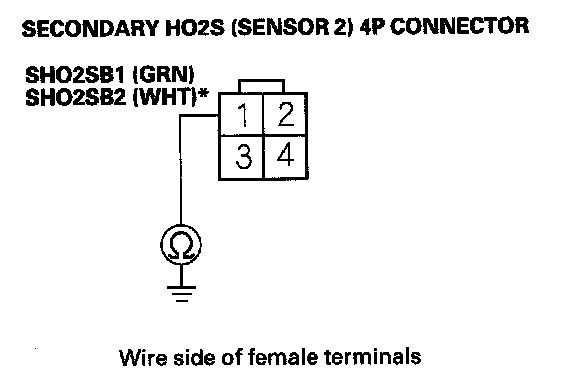

DTC Troubleshooting
DTC P0137: Rear Secondary HO2S (Bank 1, Sensor 2) Circuit Low VoltageDTC P0157: Front Secondary HO2S (Bank 2, Sensor 2) Circuit Low Voltage
NOTE:
- Before you troubleshoot, record all freeze data and any on-board snapshot, and review the general troubleshooting information.
- Information marked with an asterisk (*) applies to the front bank (Bank 2).
1. Turn the ignition switch ON (II).
2. Clear the DTC with the HDS.
3. Start the engine, then let it idle without load (in Park or neutral) until the radiator fan comes on.
4. Check the HO2S S2 in the DATA LIST with the HDS.
Does the voltage stay at 0.05 V or less?
YES - Go to step 5.
NO - Intermittent failure, the system is OK at this time. Check for poor connections or loose terminals at the secondary HO2S (Sensor 2) and the PCM.
5. Turn the ignition switch OFF.
6. Disconnect the secondary HO2S (Sensor 2) 4P connector.
7. Turn the ignition switch ON (II).
8. Check the HO2S S2 in the DATA LIST with the HDS.
Does the voltage stay at 0.05 V or less?
YES - Go to step 9.
NO - Go to step 13.
9. Turn the ignition switch OFF.
10. Jump the SCS line with the HDS.
11. Disconnect PCM connector B (49P).

12. Check for continuity between secondary HO2S (Sensor 2) 4P connector terminal No. 1 and body ground.
Is there continuity?
YES - Repair short in the wire between the PCM (B25 (B16)*) and the secondary HO2S (Sensor 2), then go to step 15.
NO - Go to step 23.
13. Turn the ignition switch OFF.
14. Replace the secondary HO2S (Sensor 2).
15. Reconnect all connectors.
16. Turn the ignition switch ON (II).
17. Reset the PCM with the HDS.
18. Do the PCM idle learn procedure.
19. Start the engine, then let it idle without load (in Park or neutral) until the radiator fan comes on.
20. Test-drive under these conditions:
- Engine coolant temperature (ECT SENSOR 1) above 158 °F (70 °C).
- Transmission in D position
- Engine speed at 1,500 - 3,000 rpm.
- Drive 1 minute or more.
21. Check for Temporary DTCs or DTCs with the HDS.
Is DTC P0137 and/or P0157* indicated?
YES - Check for poor connections or loose terminals at the secondary HO2S (Sensor 2) and the PCM, then go to step 1.
NO - Go to step 22.
22. Monitor the OBD STATUS for DTC P0137 and/or P0157* in the DTCs MENU with the HDS.
Does the screen indicate PASSED?
YES - Troubleshooting is complete. If any other Temporary DTCs or DTCs were indicated in step 21, go to the indicated DTCs troubleshooting.
NO - If the screen indicates FAILED, check for poor connections or loose terminals at the secondary HO2S (Sensor 2) and the PCM, then go to step 1. If the screen indicates EXECUTING, keep driving until a result comes on. If the screen indicates OUT OF CONDITION, go to step 20.
23. Reconnect all connectors.
24. Update the PCM if it does not have the latest software, or substitute a known-good PCM.
25. Start the engine, then let it idle without load (in Park or neutral) until the radiator fan comes on.
26. Test-drive under these conditions:
- Engine coolant temperature (ECT SENSOR 1) above 158 °F (70 °C).
- Transmission in D position
- Engine speed at 1,500 - 3,000 rpm
- Drive 1 minute or more
27. Check for Temporary DTCs or DTCs with the HDS.
Is DTC P0137 and/or P0157* indicated?
YES - Check for poor connections or loose terminals at the secondary HO2S (Sensor 2) and the PCM. If the PCM was updated, substitute a known-good PCM, then go to step 25. If the PCM was substituted, go to step 1.
NO - Go to step 28.
28. Monitor the OBD STATUS for DTC P0137 and/or P0157* in the DTCs MENU with the HDS.
Does the screen indicate PASSED?
YES - If the PCM was updated, troubleshooting is complete. If the PCM was substituted, replace the original PCM. If any other Temporary DTCs or DTCs were indicated in step 27, go to the indicated DTCs troubleshooting.
NO - If the screen indicates FAILED, check for poor connections or loose terminals at the secondary HO2S (Sensor 2) and the PCM. If the PCM was updated, substitute a known-good PCM, then go to step 25. If the PCM was substituted, go to step 1. If the screen indicates NOT COMPLETED, go to step 25.